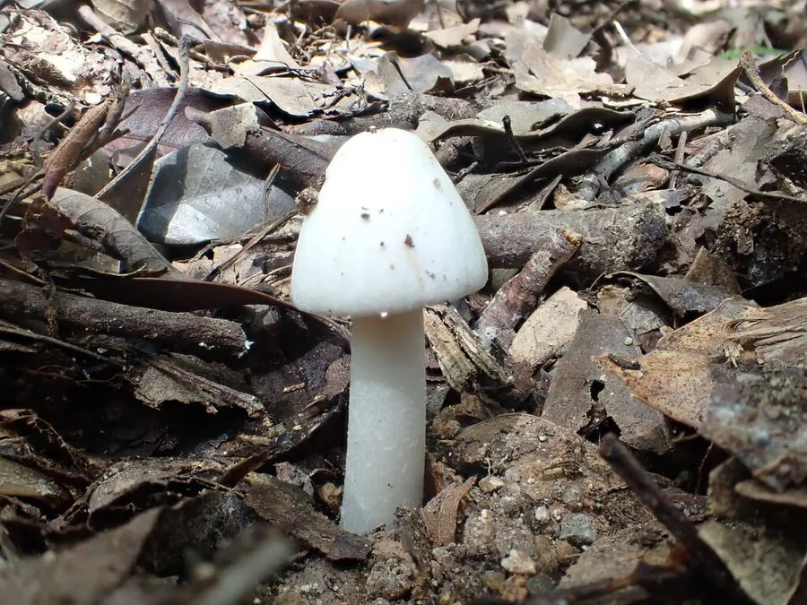

真菌 · 真菌界
裂皮鹅膏 Amanita rimosa

鹅膏科蘑菇，菌盖白色、表面龟裂成斑块，菌柄有菌环与菌托，含鹅膏毒肽，属剧毒菌，须严禁采食。
- 分类
- 门担子菌门纲伞菌纲目伞菌目科鹅膏科属鹅膏属
- 栖息环境
- 中国南方阔叶林地上，与栎类形成外生菌根，夏秋发生
- 地理分布
- 中国广东、广西、云南、湖南等地，东亚亚热带林区
- 保护级别
- 暂无评估；分布区有限，应保护其林地生境
物种志
裂皮鹅膏的子实体中等，菌盖直径 4–10 厘米，初期半球形，后平展，表面白色至乳白色，常龟裂成不规则斑块，露出下方白色菌肉，边缘平滑。菌肉白色。菌褶白色，离生，密集。菌柄长 6–12 厘米，直径 0.8–1.5 厘米，白色，上部有白色膜质菌环，基部膨大并具白色袋状菌托。孢子印白色，孢子近球形。
裂皮鹅膏是中国南方夏秋季生于阔叶林地上的剧毒菌，与栎类等树木形成外生菌根。它含有鹅膏毒肽，属剧毒菌：误食后潜伏 6–24 小时，先出现呕吐腹泻，随后进入假愈期，数日后暴发急性肝衰竭，病死率高。其菌盖龟裂成斑块是重要识别特征，但它与可食的白色蘑菇仍易混淆，必须检查菌柄基部是否有袋状菌托、上部是否有菌环。华南多起中毒事件与其近缘种有关，白色鹅膏一律不采。
形态与习性
- 菌盖直径 4–10 厘米，白色，龟裂成斑块
- 菌褶白色，离生，密集
- 菌柄长 6–12 厘米，有白色菌环与袋状菌托
- 孢子印白色，孢子近球形
- 毒性含鹅膏毒肽，可致肝衰竭死亡，严禁采食
- 识别白色菌盖龟裂，兼具菌环与菌托
趣味知识
- 裂皮鹅膏的菌盖会龟裂成一块块白色斑片，像干裂的瓷面，是它得名的原因。
- 它同样具备鹅膏菌“戴帽、系裙、穿靴”的三要素，菌托藏在土中。
- 误食后 6–24 小时才发作，假愈期过后肝衰竭进展迅速，病死率高。
- 白色鹅膏类极难辨认，华南采菌界的忠告是“白色的鹅膏一个都不要”。